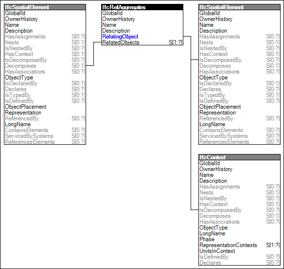

Link to this page
Link to this pageProvision of a spatial structure of the project by aggregating spatial elements. The spatial structure is a hierarchical tree of spatial elements ultimately assigned to the project. Composition refers to the relationship to a higher level element (e.g. this storey is part of a building).
NOTE The link between the highest level spatial element and the project is provided by this concept through IfcRelContainedInSpatialStructure and not through declaration using IfcRelDeclares. This is a known anomaly intruduced to maintain compatibility with earlier versions of this standard.
The order of spatial structure elements being included in the concept for builing projects are from high to low level: IfcProject, IfcSite, IfcBuilding, IfcBuildingStorey, and IfcSpace with IfcSite, IfcBuildingStorey and IfcSpace being optional levels. Therefore an spatial structure element can only be part of an element at the same or higher level.
In addition a more general hierarchical tree of spatial elements can be created by using IfcSpatialZone, from high to low: IfcProject, IfcSite, and IfcSpatialZone with IfcSite being an optional level.
NOTE The more general hiearchical tree has been introduced as an intermediate solution and stub for further extensions to support infrastructure works.
Figure 32 illustrates an instance diagram.
 |
Figure 32 — Spatial Composition |